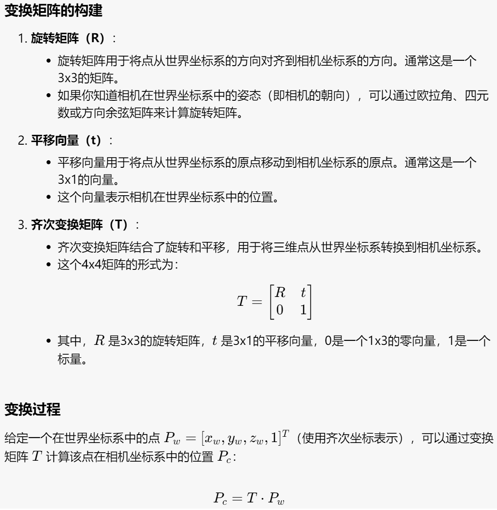
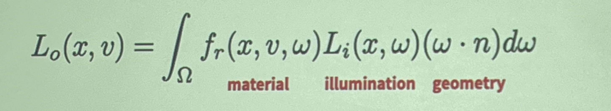

3D Vision¶
3D Representations¶
surface/boundary representations:
Depth Maps¶
representing the visible without 3D structure - 2.5D
Point Clouds¶
Triangular Meshes¶
三个点组成的三角形叫face，表示了point cloud之间点的关系
可以计算ray-triangle intersections
可能有歧义（向内还是向外）
改变点的位置可以改变物品的shape，但是有些改变涉及到的数据会比较多，也比较复杂
Parametric Surfaces¶
例如：
提供了二维平面坐标到三维坐标的映射

问题就是如何找到一个global structure去表示形状外的点
rendering也比较困难，因为对于\(f\)而言很难应用到ray-triangle intersections
volume representations:
Voxelized 3D¶
将三维空间分割成小立方体（体素），每个体素代表三维空间中的一个固定体积，类似于二维图像中的像素。通过这种方式，可以用体素来描述和表示复杂的三维形状和结构。
相比mesh（只是表示表面），这种方式需要更多数量的体素去达到一个比较好的表示效果。
Implicit Surfaces¶
一般的式子为\(F(x,y,z) = 0\)
物品外部为正，内部为负
对于这种表达方式，Boolean operations are easy。
- 识别交点和交线：
- 计算两个几何体之间的交点和交线。这通常涉及几何体的边与面的相交检测。
- 对于多边形网格，这可能需要遍历所有面和边，使用射线投射或其他几何算法来检测交点。
- 分割几何体：
- 使用交点和交线将原始几何体分割成多个部分。每个部分代表几何体的一部分，这些部分可以是面片、体素或其他几何元素。
- 确保分割后的几何体仍然保持正确的拓扑结构。
- 选择保留部分：
- 根据所选的布尔操作类型（并集、交集或差集），确定哪些部分需要保留。
- 并集：保留两个几何体的所有部分。
- 交集：仅保留两个几何体的重叠部分。
- 差集：保留一个几何体的部分，同时去除与另一个几何体重叠的部分。
- 合并几何体：
- 将保留的部分合并成一个新的几何体。这可能需要重新生成网格或曲面。
- 确保合并后的几何体是封闭的，并且没有自相交的部分。
- 修复拓扑结构：
- 检查并修复任何拓扑错误，如重复顶点、边或面。
- 确保所有的法线方向一致，并且几何体的表面是光滑的。
- 优化和简化：
- 进行必要的优化步骤，如去除冗余的几何元素、简化网格和提高计算效率。
- 可能需要使用网格简化算法来减少多边形数量，同时保持几何体的形状和细节。
能够自然地描述复杂的形状和拓扑结构。
Signed Distance Function¶
对于空间中的一个点，SDF返回该点到最近的表面的距离
这都是建立在solid shape的基础上的，不支持包含烟雾、液体的表达
对于烟雾来说，识别一个点在物体里面外面没有意义，可以使用一个点的密度去表达这个shape
Image Formation¶
我们需要解决的问题是如何通过Surface-based 3D形成image
我们需要解决：
- Geometry - 一个3Dpoint在image的哪个点
- Physics - 这个点成像结果是什么样的
Geometry¶

从世界坐标系（World Frame）到相机坐标系（Camera Frame）的变换：

相机坐标系映射到image：
在一般情况下一个点会接收来自四面八方的光，没有办法成像，所以我们引入了pinhole camera
从数学原理上讲，我们需要pinhole projection model完成3D形状到2D image位置的映射
在我们默认\(f = 1\)的情况下，映射关系为\((X,Y,Z)\to(\frac{X}{Z}, \frac{Y}{Z})\)
但是我们没有办法直接通过上述式子写出矩阵形式，需要增加一个维度实现（具体公式见prelearning）
当pinhole位置不等于image原点的时候我们对变换矩阵要作一定的改变即可实现。
Physics¶
radiance: energy along a ray, 可以通过公式计算出一条ray射到一个point上面的energy

根据当前点接收到的ray energy强度以及点上的material可以计算image pixel上面的appearance

\((\omega·n)\)是直射和偏射的区别（同样一条射线直射能量高，偏射能量低）